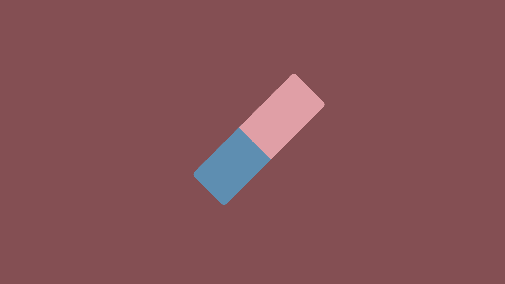

Whiteboard
A custom-built productivity app designed to give users a limitless space to plan, map, and organize their ideas. Built with offline-first principles and full local control in mind.
Overview
Whiteboard was born from a need for an offline-first tool that doesn't rely on cloud logins or subscriptions—just pure, local control. Most modern planning tools are cloud-based, restrictive, or locked behind paywalls. While tools like Milanote offer flexibility, they come with limitations in free versions and require constant internet connectivity.
Whiteboard provides complete freedom: no account needed, no storage limits, fully portable on a USB stick or through file transfer. Users can drag, drop, and organize elements like sticky notes, files, checklists, and links in an infinite visual canvas.
Design & Development
Tech Stack
Whiteboard was built using vanilla HTML, CSS, and JavaScript to ensure maximum compatibility and fast load times. The project file system is JSON-based, with each workspace saved and opened like a document file (.zpf). The UI is modular and optimized for drag-and-drop performance across browsers without external libraries.
Canvas & Interaction
A custom canvas and grid system provides a scrollable and zoomable workspace for users to freely move elements around. The interface mimics physical whiteboards—users can freely position items, connect ideas, and organize information visually rather than hierarchically. The FileReader API enables users to export and open project files locally.
Data Handling & Privacy
Whiteboard stores nothing by default. Projects must be saved manually using the built-in export system, ensuring total user control. This makes it ideal for local workflows and privacy-conscious users who want to maintain complete ownership of their data without any cloud synchronization.

Key Features
Offline-Only
Works entirely as a local application without cloud sync. You control your files, saved as local project files.
Flexible Canvas
Drag and drop text boxes, to-do lists, and images freely across an infinite canvas—ideal for brainstorming and mind maps.
Manual Project Save & Load
Users can save and reopen their boards manually using a .zpf file, no surprises.
Portable
Runs offline from any device—just keep the app folder and your .zpf files on a USB or hard drive.
Final Result
Whiteboard offers a unique local-first alternative to traditional project planning tools. It's perfect for creatives, developers, students, and teams that prefer full ownership of their workspace and data. The app is fast, flexible, and doesn’t require an internet connection to function.
Project Image Gallery